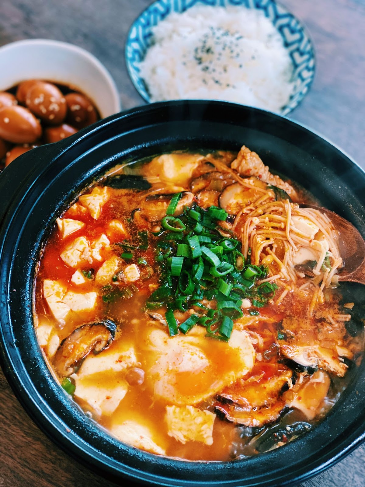
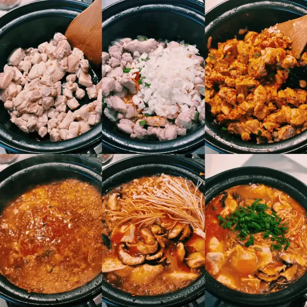

Sundunbu Jjigae
Home

Description
Active Time: 15 mins | Total Time: 15 mins
Course: Dinner, Main Course | Cuisine: Asian, Malaysian
Yield 4 servings | Calories: 681kcal
Ingredients
- 1 pack Silken Tofu 340g, also known as soft tofu
- 1/4 onion chopped
- 1 1/2 tbsp Korean Red Chilli Flakes adjust to your spice tolerance
- 1 1/2 tbsp Soy Sauce
- 3 cloves Garlic minced
- 3 Green Onion chopped and separated with white and green
- 70g Pork Belly optional, sliced
- 475 ml Anchovy or Dashi stock vegetarian, chicken, or beef stock also works
- 4 Fresh Shiitake Mushroomsliced
- 1 pack Enoki Mushrooms
- 1 Egg
Steps

-
In a pot, drizzle in some oil and turn the heat up to medium-high. Once the pot is hot, add the pork belly and saute together for 4-5 minutes.
- Add in Korean red chili flakes, minced garlic, white parts of the green onion, chopped onion, and saute together for another 2-3 minutes.
- Add in soy sauce and stock and bring it to a simmer. Let it simmer for 5 minutes.
- After 5 minutes, add in shiitake mushroom, enoki mushrooms, and also silken tofu. Break the tofu apart slightly with your spoon and let it simmer for another 4-5 minutes
- Optional but highly recommend add-in and egg and garnish with green onion.